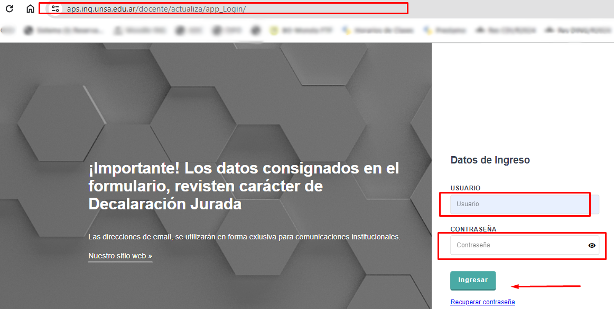

Los datos de Usuario y contraseña serán suministrados por el administrador. Una vez ingresados los datos, hacer clic en el Botón "Ingresar"
Revisar y controlar sus datos personales en cada pestaña: General, Curriculum Docente, Contacto y Contacto de Emergencia En caso de actualizar su información hacer clic en el botón Guardar